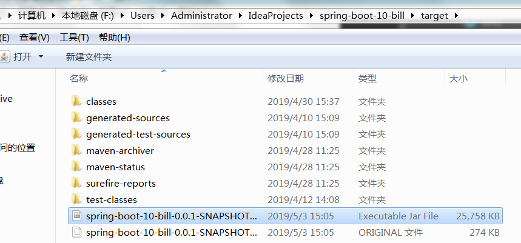

1. 打包本地项目
1.1 打包
将本地Spring Boot项目以jar包形式打包。
- IDEA最右侧栏点击Maven Projects。
找到要打包的项目，Lifecycle→package→Run Maven Build。
显示如下说明打包成功。
可在项目目录下的target目录下找到打包好的jar包。

1.2 本地测试
cmd 进入jar包所在目录，运行jar包启动项目，指定80端口号，直接访问localhost或者127.0.0.1（等同于localhost）即可。
1 | F:\Users\Administrator\IdeaProjects\spring-boot-10-bill\target>java -jar spring- |
2. 阿里云服务器
2.1 简介
阿里云官网网站：https://www.aliyun.com/
2.2 购买
先进行学生认证，然后购买仅需9.5元一个月，十分优惠。
我购买的阿里云服务器为CentOS 7.3 64位系统（什么是CentOS：https://zh.wikipedia.org/wiki/CentOS ）。
2.3 开放端口
添加安全组规则，开放8080端口、80端口和3306端口。
3. 阿里云服务器安装MySQL
3.1 参考
安装Linux版MySQL5.7。
具体参考：https://www.jellythink.com/archives/14
4. 阿里云服务器安装JDK1.8
4.1 上传解压
用FileZilla（什么是FileZilla：https://themebetter.com/ftp-filezilla.html ）将 JDK安装包上传到服务器 /opt目录里面 ，右键选择上传即可。
使用secureCRT（什么是secureCRT：https://blog.csdn.net/liwf_/article/details/9429349 ）连接阿里云服务器，解压文件。
1
2# cd /opt
# tar -zxvf JDK的文件名
ls 查看解压后的JDK。
将JDK移动到/home目录。
1
# mv jdk1.8.0_171/ /home/
4.2 配置环境变量
用vim编辑器编辑profile文件。
1
# vim /etc/profile
在末尾行添加，打开后按i编辑, 按ctrl+c停止编辑，然后 :wq 保存退出。
1
2export JAVA_HOME=/home/jdk1.8.0_171
export PATH=$PATH:$JAVA_HOME/bin:使更改的配置立即生效。
1
# source /etc/profile
查看JDK版本信息
1
# java -version
此结果说明JDK安装配置成功。
5. 运行
5.1 阿里云服务器MySQL建表
使用MySQL Workbench访问阿里云上的数据库，建项目所需要的表。
5.2 设置MySQL开机自启动
使用secureCRT设置阿里云服务器上MySQL开机自启动。
1 | # chkconfig mysqld on |
5.3 运行项目
先用FileZilla将本地打包好的项目jar包推送到阿里云服务器。
然后用secureCRT在阿里云服务器上以后台进程并用80端口运行项目。
1
# nohup java -jar 项目jar包名 --servre.port=80 &
至此已经将项目在阿里云服务器全部部署完成，理论上访问阿里云服务器的IP地址，便可以成功访问本项目。
5.4 一些小问题
Linux下MySQL中文乱码（全部显示问号），
网页响应特别慢，